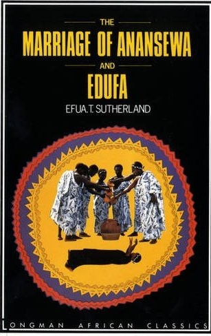
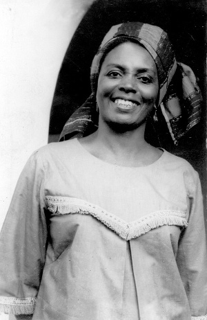
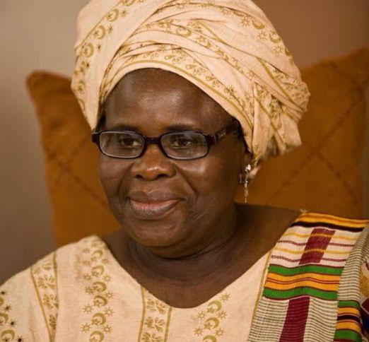
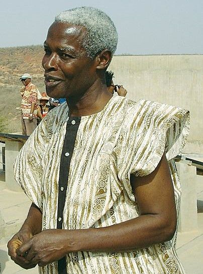

Culture

Cultural Environment
Literature And The Arts
Literature And Art

Ghana has a rich tradition of storytelling. Large audiences still enjoy Ghanaian folktales and epics exalting past chiefs in the country. Kwaku Ananse, a spider, is a popular figure in Ghanaian folklore. There is a small body of written literary works in the country’s indigenous languages. Literature in English is, however, well developed. Efua Sutherland, Ama Ata Aiddo, and Ayi Kwei Armah are Ghanaian writers who are internationally well-known.

Ghana also has a rich tradition of graphic art. Ghanaian craftsmen are wood carving connoisseurs. Stools representing abstract designs or animals are carved out of large logs. These stools become objects of deference after the deaths of their owners. Sculpting is another craft form of Ghana whereby iron and bronze casting techniques are used to produce ceremonial swords, gold weights, and other products. Textiles and pottery are also produced by Ghanaian artisans.
Performance Arts

Ghanaian music and dance performances were traditionally held within the confines of religious or political rites. They were also part of wedding ceremonies, initiation ceremonies, and other social situations. Today, while music and dance continue to serve these purposes, they also represent the country’s culture. Such performances are part of cultural festivals and public occasions and are also performed in front of tourists. The Ghana Dance Ensemble of the University of Ghana is a cultural institution of global ingratiation. Today, Ghanaian youth, especially those in urban areas, also favor contemporary music and dance styles. Highlife and Hiplife are the most popular modern music and dance forms in the country. This type of music is usually played in urban nightclubs.